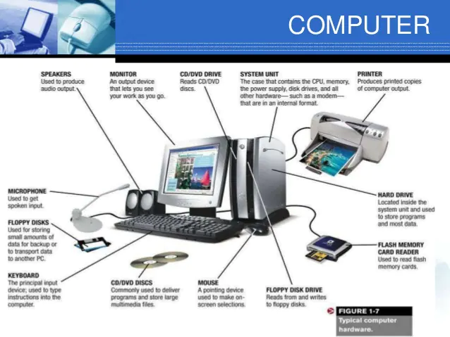
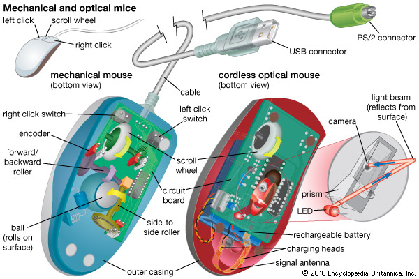
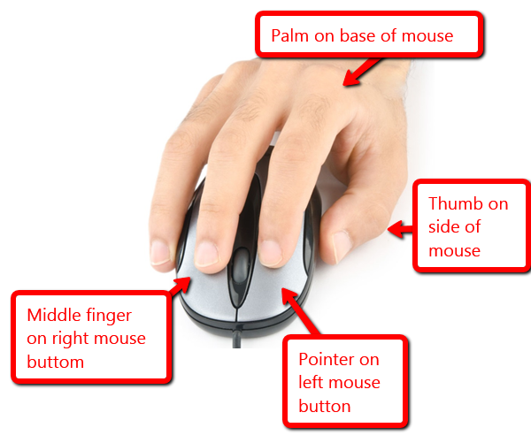
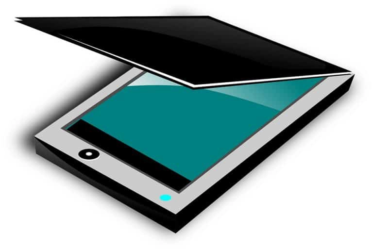
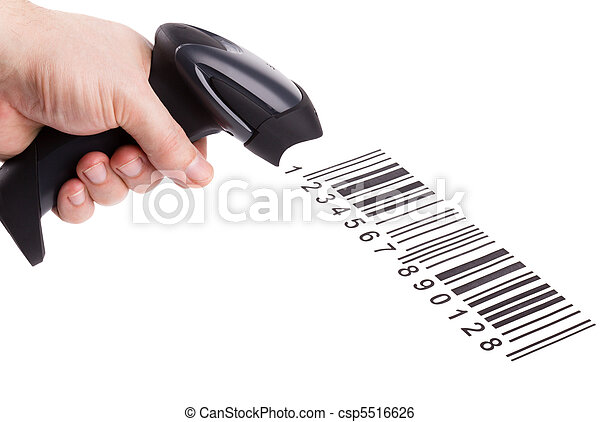
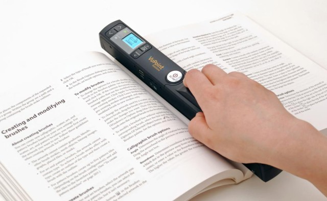
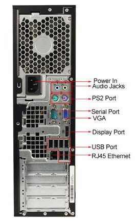

COMPUTER SYSTEMS
Definition: Is a collection of entities(hardware,software and liveware) that are designed to receive, process, manage and present information in a meaningful format.
COMPONENTS OF COMPUTER SYSTEM
Computer hardware - Are physical parts/ intangible parts of a computer. eg Input devices, output devices, central processing unit and storage devices
Computer software - also known as programs or applications. They are classified into two classes namely - sytem software and application software
Liveware- is the computer user. Also kwon as orgwareor the humanware. The user commands the computer system to execute on instructions.
A.)COMPUTER HARDWARE- Hardware refers to the physical, tangible computer equipment and devices, which provide support for major functions such as input, processing (internal storage, computation and control), output, secondary storage (for data and programs), and communication.

HARDWARE CATEGORIES (Functional Parts)
A computer system is a set of integrated devices that input, output, process, and store data and information. Computer systems are currently built around at least one digital processing device. There are five main hardware components in a computer system: Input, Processing, Storage, Output and Communication devices.
1.INPUT DEVICES
Are devices used for entering data or instructions to the central processing unit. Are classifie according to the method they use to enter data.
A.) KEYING DEVICES
Are devices used to enter data into the computer using a set of Keys eg Keyboard, key-to- storage and keypad.
i.)The keyboard
Keyboard (similar to a typewriter) is the main input device of a computer . It contains three types of keys-- alphanumeric keys, special keys and function keys. Alphanumeric keys are used to type all alphabets, numbers and special symbols like $, %, @, A etc. Special keys such as , , , , etc. are used for special functions. Function keys such as , , etc. are used to give special commands depending upon the software used e.g.F5 reloads a page of an internet browser. The function of each and every key can be well understood only after working on a PC. When any key is pressed, an electronic signal is produced. This signal is detected by a keyboard encoder that sends a binary code corresponding to the key pressed to the CPU. There are many types of keyboards but 101 keys keyboard is the most popular one.
How the keys are organized
The keys on your keyboard can be divided into several groups based on function:
Typing (alphanumeric) keys- These keys include the same letter, number, punctuation, and symbol keys found on a traditional typewriter.
Special (Control) keys -hese keys are used alone or in combination with other keys to perform certain actions. The most frequently used control keys are CTRL, ALT, the Windows key, and ESC
Function keys-The function keys are used to perform specific tasks. They are labelled as F1, F2, F3, and so on, up to F12. The functionality of these keys differs from program to program.
Cursor Movement (Navigation) keys-These keys are used for moving around in documents or WebPages and editing text. They include the arrow keys, HOME, END, PAGE UP, PAGE DOWN, DELETE, and INSERT and ARROW KEYS.
Numeric keypad-The numeric keypad is handy for entering numbers quickly. The keys are grouped together in a block like a conventional calculator or adding machine.Related image
B.)POINTING DEVICES
Are devices that enter data and instructions into the computer using a pointer that appears on the screen. The items to be entered are selected by either pointing to or clicking on them.e.g mice, joystick, touch sensitive screen, trackballs
i.) THE MOUSE
A mouse is a small device used to point to and select items on your computer screen. Although mice come in many shapes, the typical mouse does look a bit like an actual mouse. It's small, oblong, and connected to the system unit by a long wire that resembles a tail and the connector which can either be PS/2 or USB. Some newer mice are wireless.
A mouse usually has two buttons: a primary button (usually the left button) and a secondary button. Many mice also have a wheel between the two buttons, which allows you to scroll smoothly through screens of information.
When you move the mouse with your hand, a pointer on your screen moves in the same direction. (The pointer's appearance might change depending on where it's positioned on your screen.) When you want to select an item, you point to the item and then click (press and release) the primary button. Pointing and clicking with your mouse is the main way to interact with your computer. There are several types of mice: Mechanical mouse, optical mouse, optical-mechanical mouse and laser mouse.
Basic parts
A mouse typically has two buttons: a primary button (usually the left button) and a secondary button (usually the right button). The primary button is the one you will use most often. Most mice also include a scroll wheel between the buttons to help you scroll through documents and WebPages more easily. On some mice, the scroll wheel can be pressed to act as a third button. Advanced mice might have additional buttons that can perform other functions.

Holding and moving the mouse
Place your mouse beside your keyboard on a clean, smooth surface, such as a mouse pad. Hold the mouse gently with your index finger resting on the primary button and you thumb resting on the side. To move the mouse, slide it slowly in any direction. Don't twist it—keep the front of the mouse aimed away from you. As you move the mouse, a pointer (see picture) on your screen moves in the same direction. If you run out of room to move your mouse on your desk or mouse pad, just pick up the mouse and bring it back closer to you.

Pointing to an object often reveals a descriptive message about it.The pointer can change depending on what you're pointing at. For example, when you point to a link in your web browser, the pointer changes from an arrow to a hand with a pointing finger .
Most mouse actions combine pointing with pressing one of the mouse buttons. There are four basic ways to use your mouse buttons: clicking, double-clicking, right-clicking, and dragging.
Double-clicking
To double-click an item, point to the item on the screen, and then click twice quickly. If the two clicks are spaced too far apart, they might be interpreted as two individual clicks rather than as one double-click.
Double-clicking is most often used to open items on your desktop. For example, you can start a program or open a folder by double-clicking its icon on the desktop.
Right-clicking
To right-click an item, point to the item on the screen, and then press and release the secondary button (usually the right button).
Right-clicking an item usually displays a list of things you can do with the item. For example, when you right-click the Recycle Bin on your desktop, Windows displays a menu allowing you to open it, empty it, delete it, or see its properties. If you are unsure of what to do with something, right-click it.
C.)SCANNING DEVICES
Are devices that capture an object or a document directly from the source. They are classifie according to the technology used to capture data e.g. Scanners and Document readers.
i.)Scanners
Used to capture a source document and converts it into an electronic form.
Example are - FlatBed and HandHeld scanners.

ii.)Document readers
Are documents that reads data directly from source document and convey them as input in the form of electronic signal.
Types of Document Readers
i).Optical Mar Reader (OMR)Image result for optical mark reader
ii.) Barcode reader


ii) Optical Character Readers
b.)Magnetic Readers
Reads data using magnetic ink.t uses principle of magnetism to sense data which have been written using magnetised ink.
THE CENTRAL PROCESSING UNIT ( C P U)
Is the brain or the heart of a computer. Is also known as processor and consist of three units namely -
i) Control Unit ( C U)
ii) Arithmetic logic Unit ( A L U)
iii) Main Memory unit ( M M U)

The system unit is the core of a computer system. Usually it's a rectangular box placed on or underneath your desk. Inside this box are many electronic components that process data. The most important of these components is the central processing unit (CPU), or microprocessor, which acts as the "brain" of your computer. Another component is random access memory (RAM), which temporarily stores information that the CPU uses while the computer is on. The information stored in RAM is erased when the computer is turned off.
Almost every other part of your computer connects to the system unit using cables. The cables plug into specific ports (openings), typically on the back of the system unit. Hardware that is not part of the system unit is sometimes called a peripheral device. Peripheral devices can be external such as a mouse, keyboard, printer, monitor, external Zip drive or scanner or internal, such as a CD-ROM drive, CD-R drive or internal modem. Internal peripheral devices are often referred to as integrated peripherals. There are two types according to shape: tower and desktop.
Related imageImage result for desktop system unit
Tower System Unit Desktop System Unit

A motherboard (mainboard, system board, planar board or logic board) is the main printed circuit board found in computers and other expandable systems. It holds many of the crucial electronic components of the system, such as the central processing unit (CPU) and memory, and provides connectors for other peripherals.
Motherboard
TYPES OF PROCESSORS
I) Comples Instruction Set Computers (CISC)
ii) Reduced Instruction Set Computers (RISC)
FUNCTIONS OF CENTRAL PROCESSING UNIT
Process data
Control sequence of operaions within the computers
It gives command to all parts of a computer
It control the use of the main memory in storing of data and instructions
it provides temporary storage (RAM) and permanent storage(ROM) of data
THE CONTROL UNIT
Is the center of operations for the computer system, it directs the activities of the computer system.
Funlctions of Control Unit